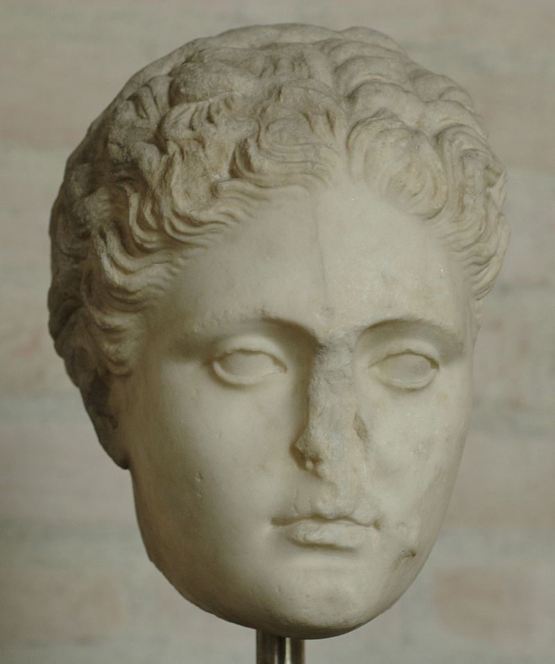
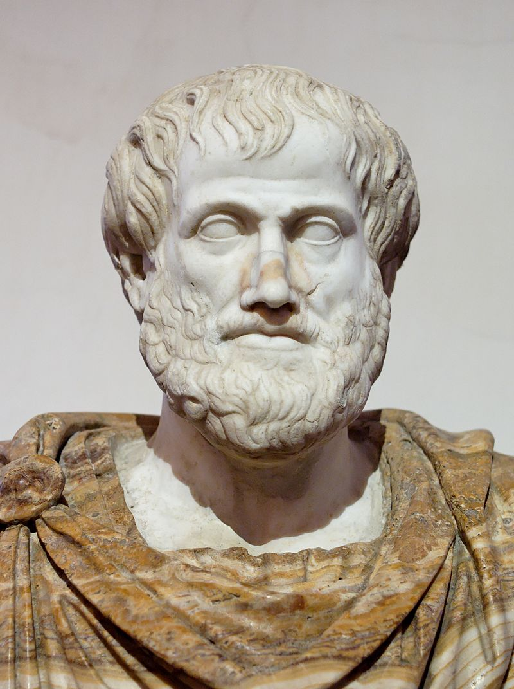

The beginnings of literature
Starting off our tour with the beginnings of literature, it is important to mention that many of the
oldest works of literature have been lost and many of the ones that survived hadn’t translated into
European languages in time. In other cases, scholars and archaeologists couldn’t identify the authors
of some of these works or any other characteristics of them, so they had to follow only theories
until today.
There is also still that big debate going on about what is literature, and if it’s quite subjective
to believe that a certain written text is categorized among literature or not. However, there are
standard attributes in order to measure the weight of what is being said to a text and give it the
name of literature.
Classical Period (1200 BCE - 476 CE)
Ancient Greece’s civilization had a powerful influence in the foundation of Western Europe. Literature was part of their culture since Greeks introduced new ways of acting and writing like drama, lyric and epic poetry.
I. Homeric or Heroic Period (1200-800 BCE):
It is believed that before that period stories were being told only orally and that was the only way to pass to future generations. Homer and Hesiod started writing these stories and they defined epic poetry. These poems were long narratives about specific events with a hero. Usually the hero has to face a great deal of life-threatening struggles thus hero’s bravery is demonstrated, many philosophical issues of human society, and Gods are also demonstrated, trying to cause more problems to humanity just for their entertainment. By overcoming them, the hero develops into someone who knows his own flaws. Epics like these are The Iliad and The Odyssey by Homer, written between 800 and 500 BCE. Hesiod is the father of didactic poetry and some of his works are Theogony and Works and Days, written between 750 and 650 BCE. Hesiod doesn’t belong in Homeric period, yet his style of writing does.Lyric poetry was introduced during this era but had some more acclaimed works to vivify in the Golden Age of Greece. In this kind of poetry there is one person singing the poem with the accompany of music, usually instruments like lyre, flute or cithara. The poet that sang lyric poems didn’t have to be the writer of the poem as well. Archilochus was the first one who wrote such poetry at 700 BC, but his full work hasn’t survived intact. The music that was playing beside the words of the poems was just a few, which means we cannot understand completely how this combination of song and oral performance was like. Sappho is known for her lyric poems, but most of her work is only in fragments. Only one poem is not lost and that is the Ode to Aphrodite, in which Sappho asks Aphrodite for help to ease her broken heart. In Roman Period there are Roman poets who were affected and wrote lyric poetry like Catullus and Horace. However, Greeks passed their lyric meters to Latins. Each lyric poem is following a specific meter like iambic or trochaic.
II. Classical Greek Period (800-200 BCE):
During the Greek Classical Period there was a sub-period, the Golden Age of Greece (499BCE-400BCE). The growing of literature in that period was enormous. A great deal of progress was made on some literature genres like epic poetry and lyric poetry while at the same time new genres were created. One of them was drama, and its meaning was different than what it means today. Drama in ancient Greece is any type of theatrical performance while today it means dramatic, with exaggerated characters that tend to awake sensational emotions. This new genre came form lyric poetry. Lyric poetry as stated before required oral performances that eventually led to drama itself and the establishment of theatres. It began at festivals committed to the god Dionysus. Comedies, tragedies and tragicomedies (satyr performances) are part of drama. At the same time actors began to build their careers, Thespis was the first one that has ever been on stage. Some authors whose works have survived are Aeschylus (Oresteia trilogy), Euripedes (Medea, The Trojan Women), Sophocles (Oedipus Rex). Each tried different styles, some of them giving emphasis on dialogues, irony, criticizing society while others used comedy as their weapon like Aristophanes (Lysistrata, The Frogs). Two other new genres of literature were philosophy and histiography. Aristotle, Socrates and Plato contributed a lot to philosophy and to many scientific disciplines. One of Aristotle's biggest works was Poetics, which was related to literary theories of drama. On the other hand, Herodotus is the father of history, Thucydides wrote history and listed his sources and Xenophon whote history and gave emphasis to war material.
III. Classical Roman Period (200BCE - 445CE)
Roman literature on its early stages imitated a whole lot of Greece's literature, especially when Rome conquered Greece in 146 CE. Roman authors were trying to come up with their own versions of Greek drama playwrights. They were taking the same stories and trying to make them fit in their own culture with their own traditions. Some of them were: Virgil, who got influenced by Homer's Iliad in his work Aeneid, Marcus Pacuvius, who wrote tragedies, Plautus, who wrote comedies influenced by Aristophanes. Later on though some genuine works were created. Gaius Lucilius was the first one to write Roman poetry amd publish his work in the 100s BCE and De Agri Cultura is the oldest Latin prose written by Cato The Elder in 160 BCE. During the Roman Imperial period there are many Roman philosophers like Marcus Aurelius and Lucretius. Marcus Aurelius believed in Stoic philosophy and has put his thoughts on it in Meditations. During The Golden Roman Age (81BCE - 17CE) there is a sub-period called the Age of Cicero. It took the name of Cicero because he has written more than any other Latin writter. Some of his books have survived, some rhetoric and others philosohpy related. He has also written letters and many speeches. The content on his work was mostly about how the life of Romans was. In the Augustan Age there are poets like Virgil and Horace. They both were important figures of Rome. Ovid was another poet who inspired lots of other poets in later periods of the Western world. Metamorphoses by Ovid was a poem that tells the history of the world from its creation until Julius Caesar's idolization.
IV. Patristic Period (70CE - 476CE)
All the writings from the fathers of church, Apostles, popes, saints belong in the Patristics. Many books had been written from 30CE, the death of Christ. The church though couldn't agree on what books should be chosen to be in the Bible until 393CE. The content of these books was the life of Jesus and his Apostles. Patristic period ends with the fall of Roman empire in 476CE. It is essential to mention that some books of that era have not been approved by the church though academics nowadays still use those books as sources. In relation to this, the church ignored many pagan works and kept only the ones that were really important for the history of the Christianity. Simon Magus, Cerinthus, Valentinus are some authors of that era, while Prudenitus and Coelius Sedulius were Christian poets. Ignatius of Antioch with his books desrcibed the ceremonies of Church.
-

Fig2. - Sappho, uploaded at Wikipedia's public domain by user Bibi Saint-Pol Sappho
Ancient Greek Lyric Poet
c.630-c.570 BCE
Content in her poems: Emphasis of lovesickness
Composed 10,000 lines, only 650 survive -

Fig3. - Aristotle, uploaded at Wikipedia's public domain by user Jastrow Aristotle
Ancient Greek Philosopher
384-322 BCE
Joined Plato's academy at 18 years old
Influenced Western philosophy -

Fig4. - Virgil, uploaded at Wikipedia's United States public domain by user Lepota Virgil
Ancient Roman Poet
70-19 BCE
One of Rome's greatest poets
His work Aeneid is the national epic of ancient Rome